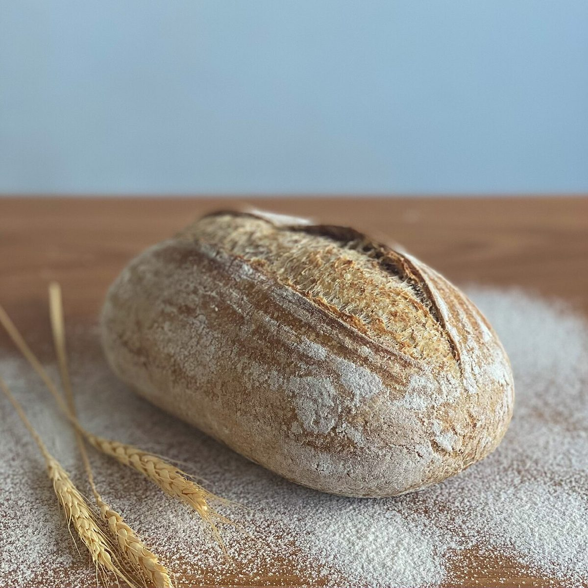

店のこと
店のこと
確認できているのは、屋号・所在地・Instagramのアカウントだけです。
「想像してみる」の部分は、制作側が想像して書いたものです。お店の実際の様子・考え・商品とは関係ありません。
確認できていること
- 屋号は「自家培養酵母と国産小麦のパン aonosora アオノソラ」、業種はベーカリー
- 所在地は山形県鶴岡市丸岡町の内301-13(〒997-0334)
- 電話番号はなし。連絡はInstagramから
- 営業時間・定休日・品書き・価格・ご予約・駐車場は準備中

想像してみる
屋号を三つに分けて
由来は分かりません。制作側は、屋号の言葉を三つに分けて眺めてみました。
自家培養酵母ことばだけを縦の骨に見立てました。製法の詳細は未確認です。
国産小麦ことばだけを横の骨に見立てました。産地や銘柄は未確認です。
あおのそら青空に揚がる凧、という連想です(由来とは無関係)。


写真は外国または撮影地不明のイメージで、お店のパンや窯ではありません。